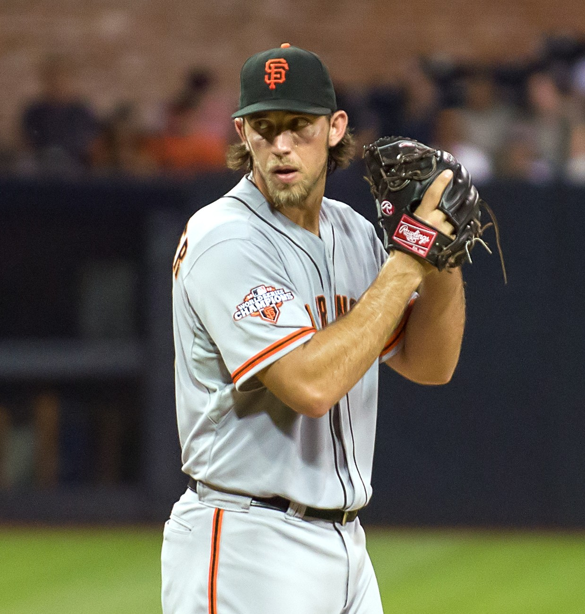
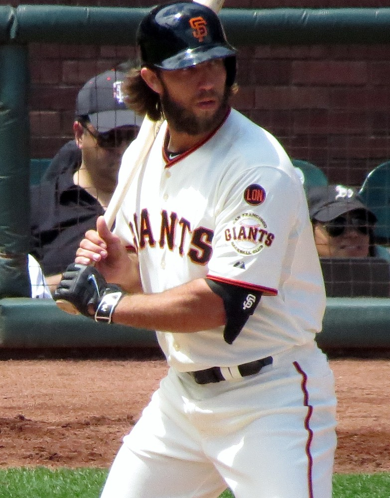
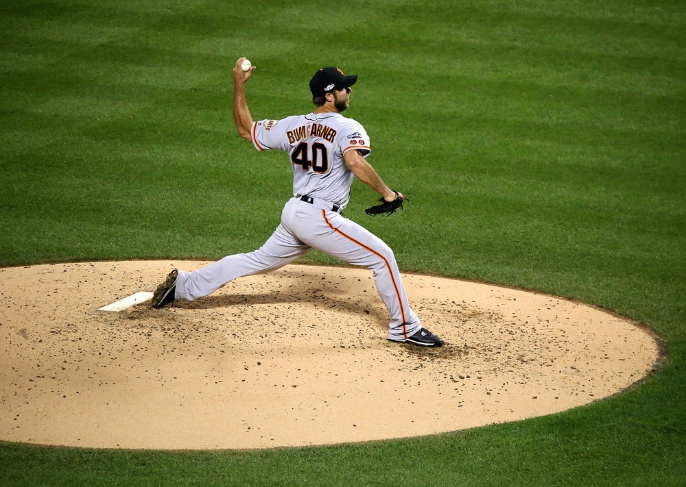
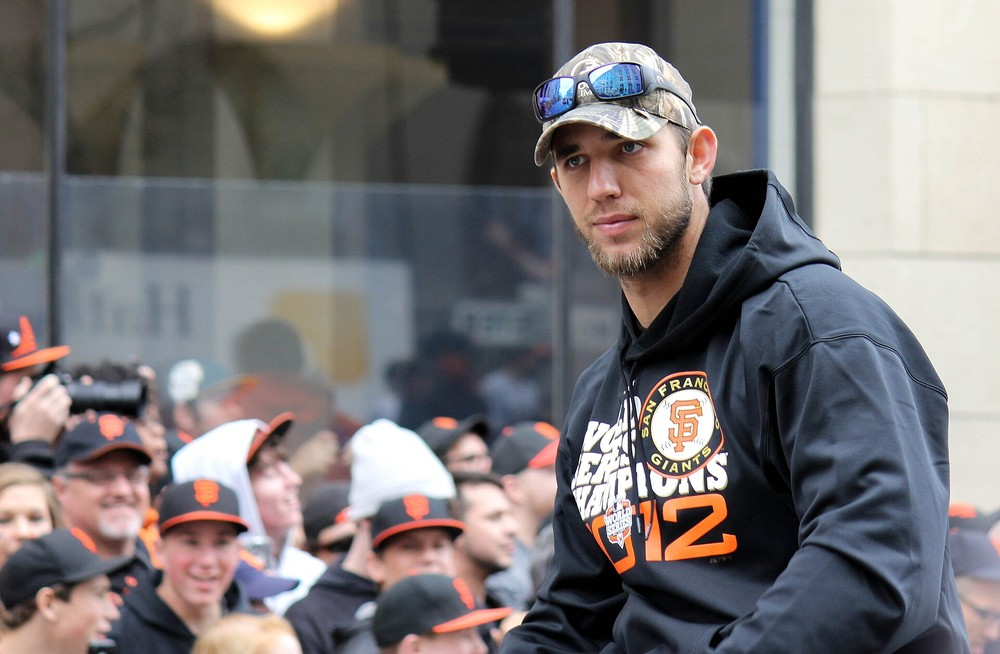

Madison “MadBum” Bumgarner
The cowboy from Hickory who threw 52 and two thirds innings in one October, then walked in from the bullpen in Kansas City and finished it.
The Madison Bumgarner Story
There are pitchers we loved, and then there's Bumgarner, who for one month in 2014 was the best pitcher any of us will ever see. A big lefty from the North Carolina hills with a slingshot delivery that looked like he was throwing to first base, a glare you could feel through the TV, and absolutely zero interest in coming out of the game.
He was born August 1, 1989, in Hickory, North Carolina, and grew up a few miles out in an area folks call Bumtown, in a log house his father built. His dad signed a waiver so he could play in a league for five to eight year olds when he was four, and wouldn't let him throw a curveball until he was sixteen. At South Caldwell High he went 11 and 2 with a 1.05 ERA as a senior, hit .424 with 11 homers, and ended his high school career by hitting a two run inside the park homer to win the 2007 state title.
The Giants took him tenth overall in 2007, the first high school pitcher they'd taken with their top pick since Matt Cain. In 2008 at Augusta he won the South Atlantic League pitching triple crown: 15 wins, a 1.46 ERA and 164 strikeouts. He debuted on September 8, 2009, at 20 years and 38 days old, filling in for a scratched Tim Lincecum against the Padres, with his locker next to Randy Johnson's.
He stuck for good in the summer of 2010, beat the Brewers with eight shutout innings for his first win in July, and posted a 1.13 ERA in five September starts as we chased down the West. He was the fourth starter behind Lincecum, Cain and Jonathan Sanchez, and he won the NLDS clincher in Atlanta, his childhood team, as the youngest pitcher in franchise history to start and win a playoff game. Then came Game 4 of the World Series in Arlington: eight shutout innings, three hits, Vladimir Guerrero struck out three times. The next night we were champions.
In 2011 the team couldn't score for him. At one point in June he had a 1.93 ERA over nine starts and a 2 and 5 record to show for it. He finished 13 and 13 with 191 strikeouts anyway. The next spring the Giants signed him to a six year extension worth $35.56 million, and he didn't even bother telling his mom. She had to drag it out of him on the phone.
In 2012 he won 16, threw his first shutout, a one hitter against the Reds, and homered for the first time. He got hit around in his first two starts that October, then went back out for Game 2 of the World Series and threw seven shutout innings against Detroit. That made it 15 straight scoreless innings to open his World Series career, the most since Bruce Hurst in 1986, and we swept.
He made his first All Star team in 2013 with a 2.77 ERA, then turned into a monster. In 2014 he was the Opening Day starter, hit two grand slams in the same season to tie the record for a pitcher, won 18 games, set the Giants record for strikeouts by a lefty with 219, and finished fourth in the Cy Young vote. Then he did what he did in October, which gets its own section below because it deserves one. Sports Illustrated named him Sportsman of the Year, and the AP picked him as its Male Athlete of the Year, the first ballplayer since Barry Bonds.
He kept going. In 2015 he won 18 again with 234 strikeouts and hit five homers, and in 2016 he struck out 251, broke a Giants record for strikeouts by a lefty that had stood since 1898, won his 100th game at 27, and threw his second winner take all Wild Card shutout, this time at Citi Field. He was an All Star four straight years, 2013 through 2016, and won two Silver Sluggers. He hit 19 homers in his career, second most by a pitcher since the DH arrived in 1973.
Then the bad luck. On an off day in Colorado in April 2017 he wrecked a rented dirt bike, landed on his pitching shoulder and missed nearly three months. The next spring a comebacker off Whit Merrifield's bat broke his pitching hand days before Opening Day. He came back both times, and in 2019, Bruce Bochy's last year, he led the league with 34 starts after joking that he'd walk right out of the ballpark if they ever used an opener in his game. His last game in a Giants uniform was a pinch hit at bat against Clayton Kershaw on the final day of 2019, and Kershaw called his catcher out to the mound so Bumgarner could soak in a standing ovation from the whole ballpark.
He left as a free agent and signed five years and $85 million with Arizona. It didn't go well. He threw seven no hit innings in a seven inning game against Atlanta in 2021 and struck out his 2,000th batter in 2022, but the Diamondbacks released him in April 2023 with a 5.23 ERA in four seasons there. As a Giant he went 119 and 92 with a 3.13 ERA and 1,794 strikeouts, fourth most in franchise history.
Away from the mound he's a rancher and a cowboy. He and his high school sweetheart Ali married on Valentine's Day 2010 in a ceremony where he wore jeans and carried a pocketknife, and it came out in 2020 that he'd been quietly roping in rodeos under the name Mason Saunders. At the 10 year reunion of the 2014 team in August 2024 he was introduced last, got the loudest ovation of the night, set the third trophy down between the other two, and threw the first pitch to Buster Posey.
What He Meant to Us
I've never seen anything like October 2014 and I don't expect to again. Bumgarner himself said it's a safe bet nobody's doing it again anytime soon, and he's right. Teams don't let starters go 52 and two thirds innings in a postseason anymore. They didn't really let them then either. Bochy just looked at him and decided not to ask.
Game 7 is the one I'll tell my grandkids about. The bullpen gate opens in the fifth and here he comes on two days' rest, and you just knew. Then Gordon's ball skips past Blanco in the ninth and I swear my heart stopped for a full minute while he stood on third. Bumgarner didn't blink. Six pitches to Perez, pop up, Panda squeezes it, and I'm on the floor.
People forget how good he was before and after that month, too. Eight shutout innings in a World Series at 21. Two winner take all shutouts on the road. Two grand slams in one season as a pitcher. He'd stare down hitters for six innings and then hit one out himself. He was the most fun Giant to root for in a long time because he wanted it more than anybody on the field.
The Arizona years don't bother me. When he walked back onto the field at Oracle for the 2014 reunion and set that third trophy down between the other two, the place went nuts, and it was louder for him than for anybody. That's where he belongs.
In Pictures



Why He Was Clutch
In 2014 he threw 52 and two thirds innings in one postseason, a major league record, more than twice as many as anyone else who pitched that October. He started the Wild Card game in Pittsburgh and threw a shutout. He won Game 1 of the NLCS in St. Louis with seven and two thirds scoreless. He won Game 1 of the World Series. He threw a four hit shutout in Game 5. Then on two days' rest he came out of the bullpen in Game 7 at Kauffman Stadium with a 3 to 2 lead in the fifth and threw five scoreless innings to finish it. That's the whole case right there and it's not close.
His World Series line for that week: 21 innings, one run, 17 strikeouts, one walk, a 0.43 ERA, two wins and a five inning save, the longest save in World Series history. The only earned run he ever allowed in a World Series was Salvador Perez's homer in Game 1. Across five World Series appearances from 2010 to 2014 he finished with a 0.25 ERA in 36 innings, the lowest ever for anybody with at least 20 innings on that stage.
And it wasn't only 2014. Eight shutout innings as a 21 year old in Arlington. Seven more against Detroit in 2012. Two complete game shutouts in winner take all Wild Card games, in Pittsburgh in 2014 and in New York in 2016, and nobody else in postseason history has more than one. For his career he was 8 and 3 with a 2.11 ERA in October. When the season was on the line you wanted him on the mound, and he wanted to be there even more.
Clutch Moments
- October 31, 2010
Eight shutout innings at 21
Game 4 of the 2010 World Series in Arlington, Giants up two games to one. Bumgarner and Buster Posey became the first rookie battery to start a Series game since 1947, and the 21 year old lefty threw eight shutout innings, allowed three hits and struck out Vladimir Guerrero three times in a 4 to 0 win. Brian Wilson finished it, and we won the World Series the next night.
- October 25, 2012
Seven more zeroes for Detroit
After two rough starts earlier that October, Bumgarner took the ball for Game 2 of the World Series at AT&T Park and threw seven scoreless innings against the Tigers, allowing two hits and striking out eight. The Giants won 2 to 0 and swept the Series three days later. He was the first pitcher since Bruce Hurst in 1986 to open his World Series career with 15 scoreless innings.
- October 1, 2014
Shutout in a do or die game
The Giants opened the 2014 postseason as a Wild Card in Pittsburgh, one game, lose and go home. Brandon Crawford hit a grand slam in the fourth, and Bumgarner threw a four hit shutout with 10 strikeouts in an 8 to 0 win. Only Sandy Koufax and Justin Verlander had ever thrown a shutout with ten strikeouts in a winner take all game.
- October 11, 2014
Seven and two thirds in St. Louis
Game 1 of the NLCS at Busch Stadium. Bumgarner threw seven and two thirds shutout innings and struck out seven in a 3 to 0 win, setting a major league record with 26 and two thirds consecutive scoreless postseason innings on the road and breaking a mark held for 90 years by another Giant, Art Nehf. He later won the NLCS MVP.
- October 21, 2014
Setting the tone in Kansas City
Game 1 of the World Series at Kauffman Stadium. Hunter Pence homered in the first and Bumgarner retired 12 straight at one point, allowing one run on three hits over seven innings in a 7 to 1 win. That Salvador Perez homer in the seventh was the only earned run he ever gave up in a World Series.
- October 26, 2014
The Game 5 shutout
With the Series tied at two, Bumgarner threw a four hit shutout at AT&T Park, struck out eight, walked nobody and needed 117 pitches in a 5 to 0 win. It was the first complete game shutout in a World Series since Josh Beckett in 2003, and no pitcher had ever thrown a Series shutout with at least eight strikeouts and no walks. When Ken Rosenthal asked if he'd be available for a Game 7, he said, "You know it. Always."
- October 29, 2014
Five innings out of the bullpen in Game 7
On two days' rest, Bumgarner came out of the bullpen in the bottom of the fifth at Kauffman Stadium with the Giants up 3 to 2. Omar Infante singled to lead off, and then Bumgarner retired 14 in a row. With two outs in the ninth, Alex Gordon's single got past Gregor Blanco and rolled to the wall, and Gordon stopped at third as the tying run.
Bumgarner kept climbing the ladder to Salvador Perez with Posey half standing behind the plate, and on the sixth pitch Perez popped it up in foul ground. Pablo Sandoval caught it. Five scoreless innings, two hits, no walks, 68 pitches, the longest save in World Series history, and the Series MVP was never in doubt.
- October 5, 2016
Another winner take all shutout
The Wild Card game at Citi Field against the defending NL champion Mets. Bumgarner went the distance on a four hit shutout, and Conor Gillaspie's three run homer off Jeurys Familia in the ninth won it 3 to 0. He became the only pitcher in postseason history with two complete game shutouts in winner take all games.
What They Said About Bumgarner
“You know it. Always.”
“Innings, I wasn't thinking about innings or pitch count. I was just thinking about getting outs, getting outs until I couldn't get them anymore and we needed someone else.”
“In fact, I was staying away from him every inning, because I was hoping he wouldn't go, 'I'm starting to get a little tired,' because there's no way I would have taken him out unless he would have told me that.”
“We were thinking maybe if we did the ring this year, we wouldn't even put our names on the side [of it], we just put MadBum on the side of the rings.”
“A winner. I mean that's all anybody wants to be known as is a winner.”
“This guy's special. We've seen what he's done for us and he's just as good a competitor as I've ever seen”
“Most of the second half of that season, but especially the postseason, was, that was me as good as I can be.”
Career Stats
| Year | Team | W | L | ERA | G | GS | CG | SHO | IP | H | ER | HR | BB | SO | WHIP |
|---|---|---|---|---|---|---|---|---|---|---|---|---|---|---|---|
| 2009 | SF | 0 | 0 | 1.80 | 4 | 1 | 0 | 0 | 10.0 | 8 | 2 | 2 | 3 | 10 | 1.10 |
| 2010 | SF | 7 | 6 | 3.00 | 18 | 18 | 0 | 0 | 111.0 | 119 | 37 | 11 | 26 | 86 | 1.31 |
| 2011 | SF | 13 | 13 | 3.21 | 33 | 33 | 0 | 0 | 204.2 | 202 | 73 | 12 | 46 | 191 | 1.21 |
| 2012 | SF | 16 | 11 | 3.37 | 32 | 32 | 2 | 1 | 208.1 | 183 | 78 | 23 | 49 | 191 | 1.11 |
| 2013 | SF | 13 | 9 | 2.77 | 31 | 31 | 0 | 0 | 201.1 | 146 | 62 | 15 | 62 | 199 | 1.03 |
| 2014 | SF | 18 | 10 | 2.98 | 33 | 33 | 4 | 2 | 217.1 | 194 | 72 | 21 | 43 | 219 | 1.09 |
| 2015 | SF | 18 | 9 | 2.93 | 32 | 32 | 4 | 2 | 218.1 | 181 | 71 | 21 | 39 | 234 | 1.01 |
| 2016 | SF | 15 | 9 | 2.74 | 34 | 34 | 4 | 1 | 226.2 | 179 | 69 | 26 | 54 | 251 | 1.03 |
| 2017 | SF | 4 | 9 | 3.32 | 17 | 17 | 1 | 0 | 111.0 | 101 | 41 | 17 | 20 | 101 | 1.09 |
| 2018 | SF | 6 | 7 | 3.26 | 21 | 21 | 0 | 0 | 129.2 | 118 | 47 | 14 | 43 | 109 | 1.24 |
| 2019 | SF | 9 | 9 | 3.90 | 34 | 34 | 0 | 0 | 207.2 | 191 | 90 | 30 | 43 | 203 | 1.13 |
| 2020 | ARI | 1 | 4 | 6.48 | 9 | 9 | 0 | 0 | 41.2 | 47 | 30 | 13 | 13 | 30 | 1.44 |
| 2021 | ARI | 7 | 10 | 4.67 | 26 | 26 | 1 | 1 | 146.1 | 134 | 76 | 24 | 39 | 124 | 1.18 |
| 2022 | ARI | 7 | 15 | 4.88 | 30 | 30 | 0 | 0 | 158.2 | 179 | 86 | 25 | 49 | 112 | 1.44 |
| 2023 | ARI | 0 | 3 | 10.26 | 4 | 4 | 0 | 0 | 16.2 | 25 | 19 | 4 | 15 | 10 | 2.40 |
| Career | 134 | 124 | 3.47 | 358 | 355 | 16 | 7 | 2209.1 | 2007 | 853 | 258 | 544 | 2070 | 1.15 |
Giants from 2009 to 2019, Arizona from 2020 to 2023. With the Giants: 119 and 92, 3.13 ERA, 1,794 strikeouts. Postseason lines built from his game logs. Scroll the table sideways on a phone.
Postseason
| Year | Team | Series | Opp | G | GS | W | L | SV | ERA | IP | H | ER | BB | SO |
|---|---|---|---|---|---|---|---|---|---|---|---|---|---|---|
| 2010 | SF | NLDS | ATL | 1 | 1 | 1 | 0 | 0 | 3.00 | 6.0 | 6 | 2 | 1 | 5 |
| 2010 | SF | NLCS | PHI | 2 | 1 | 0 | 0 | 0 | 4.05 | 6.2 | 9 | 3 | 2 | 7 |
| 2010 | SF | WS | TEX | 1 | 1 | 1 | 0 | 0 | 0.00 | 8.0 | 3 | 0 | 2 | 6 |
| 2012 | SF | NLDS | CIN | 1 | 1 | 0 | 1 | 0 | 8.31 | 4.1 | 7 | 4 | 1 | 4 |
| 2012 | SF | NLCS | STL | 1 | 1 | 0 | 1 | 0 | 14.73 | 3.2 | 8 | 6 | 1 | 2 |
| 2012 | SF | WS | DET | 1 | 1 | 1 | 0 | 0 | 0.00 | 7.0 | 2 | 0 | 2 | 8 |
| 2014 | SF | WC | PIT | 1 | 1 | 1 | 0 | 0 | 0.00 | 9.0 | 4 | 0 | 1 | 10 |
| 2014 | SF | NLDS | WSH | 1 | 1 | 0 | 1 | 0 | 2.57 | 7.0 | 6 | 2 | 1 | 6 |
| 2014 | SF | NLCS | STL | 2 | 2 | 1 | 0 | 0 | 1.72 | 15.2 | 9 | 3 | 3 | 12 |
| 2014 | SF | WS | KC | 3 | 2 | 2 | 0 | 1 | 0.43 | 21.0 | 9 | 1 | 1 | 17 |
| 2016 | SF | WC | NYM | 1 | 1 | 1 | 0 | 0 | 0.00 | 9.0 | 4 | 0 | 2 | 6 |
| 2016 | SF | NLDS | CHC | 1 | 1 | 0 | 0 | 0 | 5.40 | 5.0 | 7 | 3 | 1 | 4 |
| Career | 16 | 14 | 8 | 3 | 1 | 2.11 | 102.1 | 74 | 24 | 18 | 87 |